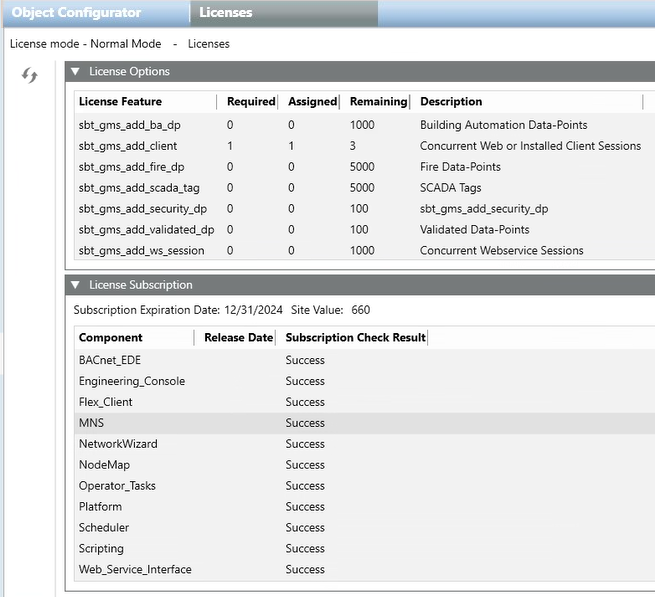
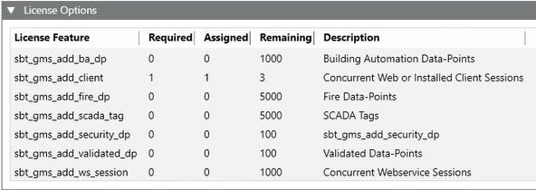
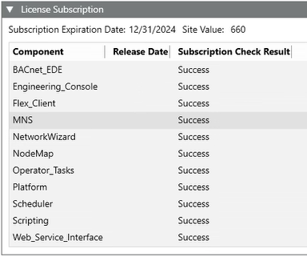
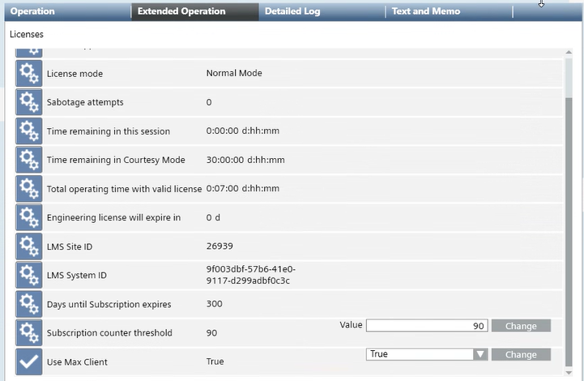

Licensing Workspace
In Engineering mode, when you select Licenses in System Browser, the Desigo CC license details are displayed in the Licenses tab, including the current license mode (for example, Normal Mode).

License Options
The License Options expander displays the list of the license features.

For each license feature:
- The Required column indicates how many copies of that license feature must be installed for Desigo CC to operate normally (that is, to run in Normal Mode). Note that the Required column will show 0 for option license features (such as, assisted treatment) because the system will still function in Normal Mode even without those features installed.
- The Assigned column indicates how many copies of that license feature are being used. The assigned copies of each license feature must match (or exceed, in the case of option license features) the required copies for the system to run in normal mode.
- The Remaining column indicates how many copies of that license feature are still available (that is, how many of the installed copies are still unused).
- The Description column provides a brief description of the license features.

For license features covering software functionality, one assigned copy is sufficient to enable that functionality for all Desigo CC clients. For example, Assigned=1 for sbt_gms_ext_sm enables System Manager for all clients.
For license features covering field data points, the Required column indicates how many are physically connected to the Desigo CC server: the Assigned column must match this value (for Desigo CC to run in Normal Mode); and the Remaining column shows how many further points you can connect.
Some license features have the effect of providing unlimited copies of another license feature. For example, one assigned copy of Unlimited Web or Installed Clients (sbt_gms_add_max_cl ) sets the assigned copies of Concurrent Web or Installed Client Sessions (sbt_gms_add_client) to Unlimited.
License Subscription
The License Subscription expander displays the Desigo CC license subscription expiration date, the site value (that is, the value of the site) and any details of the installed components.

For each component:
- The Component column indicates the name of the installed component (platform or subsystem).
- The Release Date indicates the date when the component was released the last time.
If one or multiple installed components (platform or subsystem) were released after the expiration date of the Desigo CC license subscription, their details appear highlighted in red in this expander and Desigo CC switches to Courtesy Mode.
- The Subscription Check Result indicates the status of the license check.
Licenses Properties
When you select Licenses under Project > Management System > Servers > Main Server in Management View of System Browser, the license properties are displayed in the Extended Operation tab. This provides information about the currently active license (for details about license features and option license features, see License Options).

Property | Description |
License mode | Desigo CC current license mode. |
Sabotage attempts | Number of sabotage attempts. |
Time remaining in this session | Residual time in the current Demo Mode or Engineering-license session.
|
Time remaining in Courtesy Mode | Residual time in Courtesy Mode, during which it is possible to temporarily work with the project until a valid and sufficient license is installed again. |
Total operating time with valid license | Duration counter that indicates how long Desigo CC has been continuously working with a valid and sufficient license (that is, in Normal Mode). |
Engineering license will expire in | How many days until the Engineering license expires. |
LMS Site ID | Identifier of the customer. |
LMS System ID | Identifier of the Desigo CC server computer. |
Days until subscription expires | How many days until the license subscription expires. |
Subscription counter threshold | By default, 90 days is the threshold after which the following event is generated in Event List: You can disable this functionality so that no event is generated in Event List for the license subscription expiration. For instructions, see Disabling License Expiration Notification. |
Use Max Client | By default, this property is set to true, which means that licenses are reserved to specific servers to avoid race condition in distributed systems. For instructions, see Reserving Licenses to Specific Servers. |